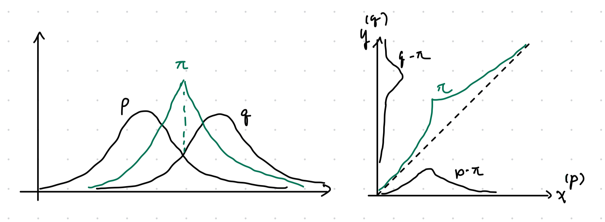

8 f-Divergence
Key takeaways:
- TV as binary hypothesis testing.
- Several divergences are metrics; one fast way to compare is to compare to metric, use triangle inequality, then use comparison inequality again.
- There is no chain rule for \(f\)-divergences other than KL-divergence.
- Convexity of \(D_f\) 8.3 \(\iff\) DPI 8.2 \(\iff\) monotonicity 8.1 \(\iff\) convexity of \(f\).
- TV does not enjoy tensorization properties.
- \(f\)-divergence is equivalent modulo \(+c(t-1)\); then convexity plus \(f(t)=1\) implies locally \(\chi^2\); w.l.o.g we can assume \(f\geq 0\) and \(f'(1)=0\).
- The powerful approximation theorem 8.4 reduces arbitrary spaces to finite ones.
- Rényi entropy enjoys tensorization and chain rule (up to tilting); it includes KL, \(\chi^2\) and Hellinger as special cases.
- The Hellinger divergence is both a metric and tensorizes well.
Definition
Definition 8.1 (f-divergence) Given a convex function \(f:(0, \infty)\to \mathbb R\) with \(f(1)=0\), for every two probability distributions over \(\mathcal X\), if \(P\ll Q\) then the \(f\) divergence is \[ D_f(P\|Q) = \mathbb E_Q \left[ f\left(\dfrac{dP}{dQ}\right) \right] \] Here \(f(0) = f(0_+)\) per limit. More generally, define \(f'(\infty) = \lim_{x\to 0^+} xf(1/x)\), we have \[ D_f(P\|Q) = \int_{q>0} q(x) f\left[ \dfrac{p(x)}{q(x)} \right] \, d\mu + f'(\infty) P[Q=0] \] this last generalization is needed to account for divergences like total variation. Intuitively, sums for terms with \(dQ=0\) are like \[ \int_{dQ=0} dQ f\left(\dfrac{dP}{dQ}\right) = \lim_{t=dP/dQ\to 0^+} \int \dfrac{dP}{t} f(1/t) \]
Examples of \(f\)-divergences:
- KL-divergence: \(f(x)=x\log x\) to recover KL-divergence.
- Total variation (TV): \(f(x) = \dfrac 1 2 |x - 1|\): \[ \mathrm{TV}(P, Q) = \dfrac 1 2 \mathbb E_Q \left|\dfrac{dP}{dQ} - 1\right| = \dfrac 1 2 \int |dP - dQ| = 1 - \int d(P\wedge Q) \] Recall that \(P\wedge Q\) is the pointwise minimum measure so \(\int d(P\wedge Q)\) is the overlap measure.
- \(\chi^2\)-divergence: \(f(x)=(x-1)^2\). \[ \chi^2(P\|Q) = \mathbb E_Q \left(\dfrac{dP}{dQ} - 1\right)^2 = \int \dfrac{(dP - dQ)^2}{dQ} = \int \dfrac{dP^2}{dQ} + dQ - 2dP = \int \dfrac{dP^2}{dQ} - 1 \]
- Squared Hellinger distance: \(f(x) = \left(1 - \sqrt x\right)^2\). \[ H^2(P, Q) = \int \left(\sqrt{dP} - \sqrt{dQ}\right)^2 = 2 - 2\int \sqrt{dPdQ} \tag{8.1} \] The quantity \(B(P, Q) = \int \sqrt{dPdQ}\) is the Bhattacharyya coefficient (Hellinger affinity). Note that \(H(P, Q) = \sqrt{H^2(P, Q)}\). The Hellinger distance is \(H(P, Q) = \sqrt{H^2(P, Q)}\).
- Le Cam divergence: \(f(x) = \dfrac{1-x}{2x+2}\), \[ \mathrm{LC}(P, Q) = \dfrac 1 2 \int \dfrac{(dP - dQ)^2}{dP + dQ} \] The square root \(\sqrt{\mathrm{LC}(P, Q)}\), the Le Cam distance, is a metric.
- Jensen-Shannon divergence take \(f(x) = x\log \dfrac{2x}{x+1} + \log \dfrac 2 {x+1}\). \[ \mathrm{JS}(P, Q) = D\left(P \| \dfrac{P+Q}{2}\right) + D\left(Q \| \dfrac{P+Q}{2}\right) \]
Proposition 8.1 \(\mathrm{TV}(P, Q) = \dfrac 1 2 \int |dP - dQ| = 1 - \int d(P\wedge Q)\).
Proof
Proof: Let \(E = \{x:dP > dQ\}\), then \[\begin{align} \int |dP - dQ| &= \int_E dP - d(P\wedge Q) + \int_{E^c} dQ - d(P\wedge Q) = \int_E dP + \int_{E^c} dQ - \int d(P\wedge Q) \\ &= \int_E dP + \int_{E^c} d(P\wedge Q)_{=dP} + \int_{E^c} dQ + \int_E d(P\wedge Q)_{=dQ} - 2\int d(P\wedge Q) \\ &= 2 - 2\int d(P\wedge Q) \end{align}\]Proposition 8.2 The following quantities derived from divergences are metrics on the space of probability distributions \[ \mathrm{TV}(P, Q), \quad H(P, Q), \quad \sqrt{\mathrm{JS}(P, Q)}, \quad \sqrt{\mathrm{LC}(P, Q)} \]
Proposition 8.3 (closure properties)
- \(D_f(Q \| P) = D_g(P \|Q)\) for \(g(x) = xf(1/x)\).
- \(D_f(P\|Q)\) is a \(f\)-divergence, then \[ D_f(\lambda P + \bar \lambda Q \|Q), \quad D_f(P \| \lambda P + \bar \lambda Q), \quad \forall \lambda\in [0, 1] \] are \(f\)-divergences.
- Linearity: \(D_{f+g} = D_f + D_g\).
- Distinguishability: \(D_f(P \| P) = 0\)
Proof
For the first claim, \[ D_g(P \|Q) = \int dQ \left(\dfrac{dP}{dQ}\right) f\left(\dfrac{dQ}{dP}\right) = D_f(Q \| P) \] For the second claim, the other case can be obtained by using the equation above. \[ D_f(\lambda P + \bar \lambda Q \|Q) = \int dQ f\left(\lambda \dfrac{dP}{dQ} + \bar \lambda\right) \implies \tilde f(x) = f\left(\lambda x + \bar \lambda\right) \]Proposition 8.4 (equivalence properties)
- \(D_f(P\|Q) = 0\) for all \(P\neq Q\) iff \(f(x)=c(x-1)\) for some \(c\).
- \(D_f = D_{f+c(x-1)}\); thus we can always assume \(f\geq 0\) and \(f'(1)=0\).
Proof
Claim \(1\) proceeds by computation (assuming continuity) \[ D_f(P \|Q) = c \int (dP / dQ - 1) dQ = 0 \] This means that \(c(x-1)\) is in the kernel of the linear operator \(f\mapsto D_f\). Pick \(c=-f'(1)\), then \(f(1)=f'(1)=0\); by convexity \(f\geq 0\).Proposition 8.5 (special case of monotonicity) Joint divergence is unchanged through the same channel \[ D_f(P_XP_{Y|X} \| Q_XP_{Y|X}) = D_f(P_X \| Q_X) \] in particular, for the source-agnostic channel we have \[ D_f(P_XP_Y \| Q_XP_Y) = D_f(P_X \| Q_X) \]
Proof
Direct computation \[\begin{align} D_f(P_XP_{Y|X} \| Q_XP_{Y|X}) &= \int Q_X(x) dx \int P_{Y|X=x}(y)dy\, f\left[\dfrac{P_X(x) P_{Y|X=x}(y)}{Q_X(x) Q_{Y|X=x}(y)}\right]\\ &= \int Q_X(x) dx f\left(\dfrac{P_X(x)}{Q_X(x)}\right) = D_f(P_X \| Q_X) \end{align}\]Information properties, MI
Theorem 8.1 (monotonicity) The joint is more distinguishable than the marginal: \[ D_f(P_{XY} \| Q_{XY}) \geq D_f(P_X \| Q_X) \] inequality is saturated when \(P_{Y|X} = Q_{Y|X}\).
Proof
Assume \(P_{XY} \ll Q_{XY}\), then expand and apply Jensen’s inequality \[\begin{align} D_f(P_{XY} \| Q_{XY}) &= \mathbb E_{X\sim Q_X} \mathbb E_{Y\sim Q_{Y|X}} f\left( \dfrac{dP_{Y|X} P_X}{dQ_{Y|X}Q_X} \right) \geq \mathbb E_{X\sim Q_X} f\left(\mathbb E_{Y\sim Q_{Y|X}} \dfrac{dP_{Y|X} P_X}{dQ_{Y|X}Q_X} \right) \\ &\geq \mathbb E_{X\sim Q_X} f\left( \dfrac{dP_X}{dQ_X} \right) = D_f(P_X \| Q_X) \end{align}\] To be more careful, on the first line we have \[\begin{align} \mathbb E_{Y\sim Q_{Y|X=x}} \dfrac{P_{Y|X=x}(y) P_X(x)}{Q_{Y|X=x}(y)Q_X(x)} &= \dfrac{P_X(x)}{Q_X(x)} \sum_y Q_{Y|X=x}(y) \dfrac{P_{Y|X=x}(y)}{Q_{Y|X=x}(y)} = \dfrac{P_X(x)}{Q_X(x)} \end{align}\] Inequality is saturated when, for every \(x\), \(P_{Y|X=x}=Q_{Y|X=x}\).Definition 8.2 (conditional f-divergence) Given \(P_{Y|X}, Q_{Y|X}\) and \(P_X\), the conditional \(f\)-divergence is \[ D_f(P_{Y|X} \| Q_{Y|X} | P_X) = D_f(P_{Y|X} P_X \| Q_{Y|X} P_X) = \mathbb E_{x\sim P_X}\left[ D_f(P_{Y|X=x}\| Q_{Y|X=x}) \right] \]
Proof
The second statement requires some justification: \[\begin{align} D_f(P_{Y|X} P_X \| Q_{Y|X} P_X) &= \mathbb E_{x\sim P_X} \mathbb E_{y\sim Q_{Y|X=x}}\left[ f\left(\dfrac{P_{Y|X=x}(y)}{Q_{Y|X=x}(y)}\right) \right] \end{align}\]Theorem 8.2 (data-processing inequality) Given a channel \(P_{Y|X}\) with two inputs \(P_X, Q_X\) \[ D_f(P_{Y|X} \circ P_X \| P_{Y|X} \circ Q_X) \leq D_f(P_X \| Q_X) \]
Proof
\(D_f(P_X \| Q_X) = D_f(P_{XY} \| Q_{XY}) \geq D_f(P_Y \| Q_Y)\), with two equalities given by proposition 8.5 and theorem 8.1. Inequality is saturated by the monotonicity condition \(P_{X|Y} = Q_{X|Y}\).Theorem 8.3 (information properties of f-divergences)
- Non-negativity: \(D_f(P\|Q) \geq 0\). If \(f\) is strictly convex at 1, i.e. \[ \forall s, t\in [0, \infty), \alpha \in (0, 1) \text{ with } \alpha s + \bar \alpha t = 1: \quad \alpha f(s)+ \bar \alpha f(t) > f(1) = 0 \] then \(D_f(P\|Q) = 0 \iff P=Q\).
- Conditional \(f\)-divergence; conditioning increases divergence: \(D_f(P_{Y|X} \circ P_X \| Q_{Y|X} \circ P_X) \leq D_f(P_{Y|X} \| Q_{Y|X} | Q_X) = D_f(P_{Y|X} P_X \| Q_{Y|X} P_X)\).
- Joint-convexity: \((P, Q)\mapsto D_f(P\|Q)\) is jointly convex; consequently, \(P\mapsto D_f(P\|Q)\) and \(Q\mapsto D_f(P\|Q)\) are also convex.
Proof
For non-negativity, apply monotonicity to \[ D_f(P_X \| P_Y) = D_f(P_{X, 1} \| P_{Y, 1}) \geq D_f(1 \| 1) = 0 \] Assume \(P\neq Q\) so there exists measurable \(A\) such that \(P[A]=p \neq Q[A] = Q\), then apply the \(\chi_A\) channel and apply DPI; both cases \(q=1\) and \(q\neq 1\) contradict strict convexity. Claim (2) follows from monotonicity and recognize \(P_{Y|x}\circ P_X\) as the marginal of \(P_{Y|X}P_X\). Joint convexity follows from standard latent variable argument: to prove joint convexity \[ D(\lambda P_0 + \bar \lambda P_1 \| Q_0 + \bar \lambda Q_1) \leq \lambda D(P_0 \| Q_0) + \bar \lambda D(P_1 \| Q_1) \] Take \(\theta \sim \mathrm{Ber}_\lambda \to (P, Q)\), then the RHS is \(D(P_{P|\lambda} \| P_{Q|\lambda} | P_\lambda)\) while the LHS is \(D(P_{P|\lambda}\circ P_\lambda\| P_{Q|\lambda} \circ P_\lambda)\)
The following powerful theorem allows us to reduce any general problem to finite alphabets.Theorem 8.4 (finite approximation theorem) Given two probability measures \(P, Q\) on \(\mathcal X\) with \(\sigma\)-algebra \(\mathcal F\). Given a finite \(\mathcal F\)-measurable partition \(\mathcal E = \{E_1, \cdots, E_n\}\), define the distribution \(P_{\mathcal E}\) on \([n]\) by \(P_{\mathcal E}(j) = P[E_j]\), similarly for \(Q\), then \[ D_f(P\|Q) = \sup_{\mathcal E} D_f(P_{\mathcal E} \| Q_{\mathcal E}) \] where \(\sup\) is over all finite \(\mathcal F\)-measurable partitions.
TODO
Definition 8.3 (f-information) The \(f\)-information is defined by \[ I_f(X; Y) = D_f(P_{XY} | P_XP_Y) \]
Definition 8.4 (f-DPI) For \(U\to X\to Y\), we have \(I_f(U; Y) \leq I_f(U; X)\).
Proof: \(I_f(U; X) = D_f(P_{UX} \|P_UP_X) \geq D_f(P_{UY} \| P_UP_Y) = I_f(U; Y)\).
TV and Hellinger, hypothesis testing
In a binary hypothesis testing problem, one is given an observation \(X\), which is known to be \(X\sim P\) or \(X\sim Q\). The goal is to decide \(\lambda\in \{0, 1\}\) based on \(X\). In other words, \[ \lambda \to X\to \hat \lambda \] Our objective is to find a possibly randomized decision function \(\phi:\mathcal X\to \{0, 1\}\) such that \[ P[\phi(X)=1] + Q[\phi(X) = 0] \] is minimized. We will see that optimization leads to TV, while asymptotic tensorization leads to \(H^2\).
Theorem 8.5 (variational characterizations of TV)
- \(\sup\)-representation: let \(\mathcal F = \{f:\mathcal X\to \mathbb R, \|f\|_\infty \leq 1\}\), then \[ \mathrm{TV}(P, Q) = \sup_E P(E) - Q(E) = \dfrac 1 2 \sup_{f\in \mathcal F} \left[\mathbb E_P f(X) - \mathbb E_Q f(X)\right] \] Supremum is achieved by \(f=\chi_E\), where \(E=\{x:p(x)>q(x)\}\).
- \(\inf\)-representation: Provided the diagonal is measurable, \[ \mathrm{TV}(P, Q) = \min_{P_{XY}} \{P_{XY}[X\neq Y] \text{ subject to } P_X=P, P_Y=Q\} \]
Proof
The upper bound by \(\mathrm{TV}\) is intuitive; to demonstrate saturation, let \(E = \{x:p(x)>q(x)\}\), then \[\begin{align} 0 = \int [p(x) - q(x)]\, d\mu &= \int_E + \int_{E^c} [p(x) - q(x)]\, d\mu \\ \int_E [q(x) - p(x)]\, d\mu &= \int_{E^c} [p(x) - q(x)]\, d\mu \end{align}\] The sum of these two integrals (note the definition of \(E\)) equals \(2\mathrm{TV}\), then \[ \mathrm{TV}(P, Q) = \dfrac 1 2 \int \chi_E[(q(x) - p(x)]\, d\mu = \dfrac 1 2 \mathbb E_P \chi_E(X) - \mathbb E_Q \chi_E(X) \] For the \(\inf\) representation, given any coupling \(P_{XY}\), for \(f\in \mathcal F\) we have \[ \mathbb E_P f(X) - \mathbb E_Q f(X) = \mathbb E_{P_{XY}}[f(X) - f(Y)] \leq 2 P_{XY}[X\neq Y] \] This shows that the \(\inf\)-representation is always an upper bound; we obtain saturation when \(X\neq Y\) only happens for possible values of \(X\) disjoint from possible values of \(Y\), and \(f\) is the indicator function on the disjoint support. This is satisfied by the following construction given \(P, Q\):
- Let \(\pi = \int \pi(x)\, d\mu\) denote the overlap scalar, where \(\pi(x) = \min(p(x), q(x))\).
- With probability \(\pi\) take \(X=Y\) sampled from the overlap density \[ r(x) = \dfrac 1 \pi \pi(x) \]
- With probability \(1-\pi\) sample \(X, Y\) independently from
\[
p_1(x) = \dfrac{p(x) - \pi(x)} {1 - \pi}, \quad
q_1(x)=\dfrac{q(x) - \pi(x)}{1 - \pi}
\]

Figure 8.1: Visual representation of joint construction.
Joint range
We first provide a special case of an inequality.
Theorem 8.6 (Pinsker's inequality) For any two distributions, \(D(P\|Q) \geq (2\log e) \mathrm{TV}(P, Q)^2\)
Proof
By DPI, it suffices to consider Bernoulli distributions via the channel \(1_E\) which results in Bernoulli with parameter \(P(E)\) or \(Q(E)\). Working in natural units, Pinsker’s inequality for Bernoulli distributions yield \[ \sqrt{\dfrac 1 2 D(P\|Q)} \geq \mathrm{TV}(1_E\circ P, Q_E\circ Q) = |P(E) - Q(E)| \] Taking supremum over all \(E\) yields the desired inequality per the TV variational characterization theorem 8.5.Definition 8.5 (joint range) Given two \(f\)-divergences \(D_f\) and \(D_g\), their joint range \(\mathcal R\subset [0, \infty]^2\) is defined by \[ \mathcal R = \mathrm{Image}\left[ (P, Q)\mapsto (D_f(P\|Q, D_g(P\|Q)) \right] \] The joint range over \(k\)-ary distribution is denoted \(\mathcal R_k\).
Our next result will characterize the set of \(f\)-divergences.
Lemma 8.1 (Fenchel-Eggleston-Carathéodory theorem) Let \(S\subset \mathbb R^d\) and \(x\in \mathrm{co}(S)\). There exists a set of \(d+1\) points \(S'=\{x_1, \cdots x_{d+1}\}\in S\) such that \(x\in \mathrm{co}(S')\). If \(S\) has at most \(d\) connected components, then \(d\) points are enough.
As a corollary of the following theorem, it suffices to prove joint range for Bernouli, then convexify the range.
Theorem 8.7 (Harremoës-Vajda) \(\mathcal R = \mathrm{co}(\mathcal R_2) = \mathcal R_4\) where \(\mathrm{co}\) denotes the convex hull with a natural extension of convex operations to \([0, \infty]^2\). In particular,
- \(\mathrm{co}(\mathcal R_2) \subset\mathcal R_4\): standard latent variable argument.
- \(\mathcal R_k \subset \mathrm{co}(\mathcal R_2) = \mathcal R_4\).
- \(\mathcal R = \mathcal R_4\): the approximation theorem already implies \(\mathcal R = \overline{\bigcup_k \mathcal R_k}\); the closure is technical.
Proof
First consider claim \(1\). Construct a convex divergence as follows: for two pairs of distributions \((P_0, Q_0)\) and \((P_1, Q_1)\) on \(\mathcal X\) and \(\lambda \in [0, 1]\). Define the typical Bernoulli latent joint \((X, B)\) by \(P_B = Q_B = \mathrm{Ber}(\alpha)\) and \((P, Q)_{X|B=j} = (P_j, Q_j)\). Applying the conditional divergence to obtain \[ D_f(P_{XB} \| Q_{XB}) = \bar \alpha D_f(P_0\|Q_0) + \alpha D_f(P_1 \| Q_1) \implies \mathrm{co}(\mathcal R_2)\subset \mathcal R_4 \] Onto the most nontrivial claim \(2\): fixing \(k\) and distributions \(P, Q\) on \([k]\) with distributions \((p_j), (q_j)\), w.l.o.g. make \(q_{j>1}>0\) and concentrate \(q_1=0\) (i.e. concentrate all empty points onto \(j=1\). Consider the equivalence class \(\mathcal S\) of all \((\tilde p_j, \tilde q_j)\) which have the same likelihood ratio on the support of \(q\): Let \(\phi_{j>1} = p_j / q_j\) and consider \[ \mathcal S = \left\{ \tilde Q = (\tilde q_j)_{j\in [k]}: \tilde q_j\geq 0, \sum \tilde q_j=1, \tilde q_1=0, \right\} \] Note that \(\mathcal S\) it the intersection of
- The simplex of all distributions \(\tilde q\).
- The half-space specified by \(\tilde q\cdot \phi \leq 1\).
We can next identify the boundary of \(\mathcal S_e\subset \mathcal S\):
- \(\tilde q_{j\geq 2}=1\) and \(\phi_j\leq 1\).
- \(\tilde q_{j_1}+\tilde q_{j_2}=1\) and \(\tilde q_{j_1}\phi_{j_1} + \tilde q_{j_2}\phi_{j_2}=1\).
Figure 8.2: Gray line corresponds to \(S\); blue and green dots correspond to elements of \(S_e\) identified by (1) and (2), respectively.
We next have \(\mathcal S = \mathrm{co}(\mathcal S_e)\); so for \(Q\), there exists extreme points \(\tilde Q_j\in \mathcal S_e\) (note that \(\mathcal S_e\) is dependent upon \(Q\)!) with support on at most \(2\) atoms (binary distributions) such that \(Q = \alpha_j \tilde Q_j\). The map asspciating \(\tilde P\) given \(\tilde Q\) is \[ \tilde p_j = \begin{cases} \phi_j \tilde q_j & j\in \{2, \cdots, k\}, \\ 1 - \sum_{j=2}^k \phi_j \tilde q_j & j = 1 \end{cases} \] On this particular set which fixes the likelihood ratio, the divergence is an affine map: \[ \tilde Q \mapsto D_f(\tilde P \| \tilde Q) = \sum_{j\geq 2}\tilde q_j f(\phi_j) + f'(\infty)\tilde p_1 \implies D_f(P\|Q) = \sum_{j=1}^m \alpha_i D_f(\tilde P_i \|\tilde Q_i) \]
We defer detailed examples of joint ranges to the book (7.6).
Rényi divergence
The Rényi divergences are a monotone transformation of \(f\)-divergences; they satisfy DPI and other properties.
Definition 8.6 (Rényi divergence) For \(\lambda\in \mathbb R- \{0, 1\}\), the Rényi divergence of order \(\lambda\) between distributions \(P, Q\) is \[ D_\lambda(P \| Q) = \dfrac 1 {\lambda - 1} \log \mathbb E_Q \left[ \left(\dfrac{dP}{dQ}\right)^\lambda \right] \]
To see its connection with entropy, note that \[ \mathbb E_Q \left(\dfrac{dP}{dQ}\right)^\lambda = \mathrm{sgn}(\lambda - 1) D_f(P\|Q) + 1, \quad f = \mathrm{sgn}(\lambda - 1)(x^\lambda - 1) \] with which the Rényi entropy becomes (the \(\mathrm{sgn}(\lambda - 1)\) is just there to keep \(f\) convex): \[ D_\lambda(P\|Q) = \dfrac 1 {\lambda - 1} \log \left[1 + \mathrm{sgn}(\lambda - 1) D_f(P\|Q) \right], \quad f = \mathrm{sgn}(\lambda - 1)(x^\lambda - 1) \tag{8.2} \]
Proposition 8.6 Under regularity conditions, \[ \lim_{\lambda \to 1} D_\lambda (P \|Q) = D(P \| Q) \]
Proof
Expand \((d_QP)^\lambda = \exp(\lambda \ln d_QP)\) about \(\lambda=1\): \[ (d_QP)^{\lambda} \approx d_QP + \ln d_QP \cdot d_QP \cdot (\lambda - 1) \] Taking \(\mathbb E_Q\) yields \(1 + (\lambda - 1)\mathbb E_P[\ln d_QP]\); then substituting into \(\log x \approx 1+x\) yields \[ D_{\lambda_\to 1}(P \| Q) = \dfrac 1 {\lambda - 1} \log \left[ 1 + (\lambda - 1)\mathbb E_P[\ln d_QP] \right] = \mathbb E_P \ln d_QP = D(P \| Q) \]Proposition 8.7 (special cases of Rényi divergence) Consider \(\lambda = 1/2, 2\): \[ D_2 = \log(1 + \chi^2), \quad D_{1/2} = -2\log\left(1 - \dfrac{H^2}{2}\right) \]
Proof
The \(D_2\) case is apparant in light of equation (8.2). Substitute \(\lambda = 1/2\): \[ D_{1/2} = \dfrac 1 {1/2 - 1} \log[1 - D_{x\mapsto 1 - \sqrt x}(P\|Q)] \] It remains to show that \(D_{1 - \sqrt x} (P\|Q) = \dfrac{H^2}{2}\), applying equation (8.1) \[ \mathbb E_Q\left[1 - \sqrt{d_QP}\right] = \dfrac 1 2 \mathbb E_Q \left(1 - \sqrt{d_QP}\right)^2 = 1 - \int \sqrt{dPdQ} \]Several other properties:
- \(\lambda \mapsto D_\lambda D(P\|Q)\) is non-decreasing and \(\lambda \mapsto (1 - \lambda) D_\lambda(P\|Q)\) is concave.
- For \(\lambda \in [0, 1]\) the divergence \(D_\lambda\) is jointly convex.
- The Rényi entropy for finite alphabet is \(H_\lambda(P) = \log m - D_\lambda(P \| U)\).
Definition 8.7 (conditional Rényi entropy) Given \(P_{X|Y}, Q_{X|Y}\) and \(P_Y\) \[\begin{align} D_\lambda(P_{X|Y} \| Q_{X|Y} | P_Y) &= D_\lambda(P_{X|Y} P_Y \| Q_{X|Y} P_Y) = \dfrac 1 {\lambda - 1} \log \mathbb E_{Q_{X|Y}P_Y} \left[ \dfrac{(P_{X|Y}P_Y)(X, Y)}{(Q_{X|Y}P_Y)(X, Y)} \right]^\lambda \\ &= \dfrac 1 {\lambda - 1} \log \mathbb E_{y\sim P_Y} \int_{\mathcal X} P_{X|Y=y}(x)^\lambda Q_{X|Y=y}(x)^{1-\lambda} \end{align}\]
Proposition 8.8 (Rényi chain rule) Given \(P_{AB}, Q_{AB}\), define the \(\lambda\)-tilting of \(P_B\) towards \(Q_B\) by \[ P_B^{(\lambda)}(b) = P_B^\lambda(b) Q_B^{1-\lambda}(b) \exp \left[ -(\lambda - 1) D_\lambda(P_B \| Q_B) \right] \] joint Rényi divergence decomposes as \[ D_\lambda(P_{AB} \| Q_{AB}) = D_\lambda(P_B \| Q_B) + D_\lambda( P_{A|B} \| Q_{A|B} | P_B^{(\lambda)}) \]
Proof
First need to prove that \(P_B^{(\lambda)}\) is indeed correctly normalized: \[\begin{align} \exp \left[ -(\lambda - 1) D_\lambda(P_B \| Q_B) \right] &= \mathbb E_Q \left[\left(\dfrac{dP}{dQ}\right)^\lambda\right] = \int P_B^\lambda(b) Q_B^{1-\lambda}(b)\, db \end{align}\] Next up, computing the RHS explicitly, we have \[\begin{align} (\lambda - 1) [D_\lambda(P_B \| Q_B) + D_\lambda( P_{A|B} \| Q_{A|B} | P_B^{(\lambda)})] &= \log \int_{\mathcal B} \left[ P_B(b)^\lambda Q_B(b)^{1-\lambda} \cdot \int_{\mathcal A} P_{A|B=b}(a)^\lambda Q_{A|B=b}(a)^{1-\lambda} \right] \\ &= \log \mathbb E_{Q_{AB}} \left(\dfrac{dP_{AB}}{dQ_{AB}}\right)^\lambda = D_\lambda(P_{AB} \| Q_{AB}) \end{align}\]Corollary 8.1 (Rényi tensorization) Specializing the chain rule to independent joints, \[ D_\lambda \left(\prod P_{X_j} \| \prod Q_{X_j}\right) = \sum_j D_\lambda(P_{X_j} \| Q_{X_j}) \]
Corollary 8.2 (tensorization of χ² and Hellinger) Applying tensorization and proposition 8.7: \[\begin{align} 1 + \chi^2 \left(\prod_j P_j \| \prod_j Q_j\right) &= \prod_j 1 + \chi^2(P_j \| Q_j) \\ 1 - \dfrac 1 2 H^2 \left(\prod P_j, \prod Q_j\right) &= \prod_j 1 - \dfrac 1 2 H^2(P_j, Q_j) \end{align}\]
Proposition 8.9 (variational characterization via KL) Show that \(\forall \alpha \in \mathbb R\): \[ \bar \alpha D_\alpha(P \|Q) = \inf_R \left[ \alpha D(R\|P) + \bar \alpha D(R\|Q) \right] \]
Proof
The KL case \(\alpha=1\) holds trivially with \(R=P\). otherwise expand the LHS to \[\begin{align} \bar \alpha D_\alpha(P\|Q) &= -\log \mathbb E_Q \left(\dfrac{dP}{DQ}\right)^\alpha = \log \mathbb E_Q \left( \dfrac{dQ}{dP} \right)^\alpha \end{align}\] Expand the RHS to \[\begin{align} \alpha D(R\|P) + \bar \alpha D(R\|Q) &= \mathbb E_R \log \left[ \left(\dfrac{dR}{dP}\right)^\alpha \left(\dfrac{dR}{dQ}\right)^{\bar \alpha} \right] = \mathbb E_R \log \dfrac{dR}{dP^\alpha dQ^{\bar \alpha}} \\ &= \mathbb E_R \log \dfrac{dR}{dQ} \cdot \left(\dfrac{dQ}{dP}\right)^\alpha = D(R \| Q) + \mathbb E_R \log \left(\dfrac{dQ}{dP}\right)^\alpha \end{align}\] We wish to establish the bound \[\begin{align} \log \mathbb E_Q \left( \dfrac{dQ}{dP} \right)^\alpha \leq \mathbb E_R \log \left[ \dfrac{dR}{dP^\alpha dQ^{\bar \alpha}} \right] &= D(R \| Q) + \mathbb E_R \log \left(\dfrac{dQ}{dP}\right)^\alpha \\ D(R\|Q) &\geq \mathbb E_R \log \left(\dfrac{dP}{dQ}\right)^\alpha - \log \mathbb E_Q \left(\dfrac{dP}{dQ}\right)^\alpha \end{align}\] Comparison between \(\log \mathbb E\) and \(\mathbb E\log\) screams Donsker-Varadhan 5.5: \[ D(R \|Q) \geq \mathbb E_R f - \log \mathbb E_Q \exp f \] for \(f = \alpha \log(dP/dQ)\) being the likelihood ratio. Recall that the saturation constraint is \[ \log \left(\dfrac{dP}{dQ}\right)^\alpha = f = \log \dfrac{dR}{dQ} + C \iff \dfrac{P(x)^\alpha}{Q(x)^\alpha} = \dfrac{R(x)}{Q(x)} \iff dR \propto dP^\alpha dQ^{\bar \alpha} \] the proportionality freedom comes from invariance of \(f\mapsto f+C\) in Donsker-Varadhan and is determined by the normalization constraint. The final result is simply the Renyi-tilt of \(P\) towards \(Q\) given by \[ R(x) = P(x)^\alpha Q(x)^{\bar \alpha} \exp \left[ -\bar \alpha D_\alpha(P \| Q) \right] \]Variational characterizations
Given a convex function \(f:(0, \infty)\to \mathbb R\), recall that is convex conjugate \(f^*:\mathbb R\to \mathbb R\cup \{+\infty\}\) is defined by \[ f^*(y) = \sup_{x\in \mathbb R_+} xy - f(x) \] The Legendre transform is convex, involutary, and satisfies \[ f(x) + f^*(y) \geq xy \] Similarly, the convex conjugate of any convex functional \(\Psi(P)\) is \[ \Psi^*(g) = \sup_P \int g\, dP - \Psi(P), \quad \Psi(P) = \sup_g \int g\, dP - \Psi^*(g) \] In this section, we identify \(f:(0, \infty)\to \mathbb R\) with its convex extension \(f:\mathbb R\to \mathbb R\cup \{+\infty\}\) (one can just take \(f = \infty\) for all inputs outside the original domain); different choices of \(f\)’s extension yields a different variational characterization.
Theorem 8.8 (supremum characterization of f-divergences) Given probability measures \(P, Q\) on \(\mathcal X\); fix an extension of \(f\) and corresponding Legendre transform \(f^*\); denote \(\mathrm{dom}(f^*) = (f^*)^{-1}(\mathbb R-\{\infty\})\), then \[ D_f(P\|Q) = \sup_{g:\mathcal X\to \mathrm{dom}(f^*)} \mathbb E_P[g(X)] - \mathbb E_Q[(f^*\circ g)(X)] \]
Fisher information, location family
We consider a parameterized set of distributions \(\{P_\theta: \theta\in \Theta\}\) where \(\Theta\) is an open subset of \(\mathbb R^d\). Further suppose that \(P_\theta(dx)=p_\theta(x)\mu(dx)\) for some common dominating measure \(\mu\).
Definition 8.8 (Fisher information, score) If for each fixed \(x\), the density \(p_\theta(x)\) depends smoothly on \(\theta\), we define the Fisher information matrix w.r.t. \(\theta\) as \[ \mathcal J_F(\theta) = \mathbb E_\theta(VV^T), \quad V = \nabla_\theta \ln p_\theta(X) = \dfrac 1 {p_\theta(X)} \nabla_\theta p_\theta(X) \] The random variable \(V\) is known as the score.
Under technical regularity conditions, we have:
- \(\mathbb E_\theta[V]=0\): for an intuitive argument \[ \mathbb E_\theta[\nabla_\theta \ln p_\theta(X)] = \int \nabla_\theta p_\theta(x) = \nabla_\theta \int p_\theta = 0 \]
- \(\mathcal J_F(\theta) = \mathrm{Cov}_\theta(V) = -\mathbb E_\theta \left[\mathcal H_\theta \ln p_\theta(X)\right]\): differentiating (1) \[\begin{align} \partial_{jk}^2 \ln p_\theta = \partial_{j} \left( \dfrac 1 {p_\theta} \partial_{k} p_\theta \right) = -\dfrac{(\partial_{j} p_\theta)(\partial_{k} p_\theta)} {p_\theta^2} + \left[\dfrac 1 {p_\theta} \partial_{jk}^2 p_\theta\right]_{=0} = (VV^T)_{jk} \end{align}\] The second term vanishes when we take the expectation.
- \(D(P_{\theta} \| P_{\theta + \xi}) = \dfrac{\log e}{2} \xi^T \mathcal J_F(\theta)\xi + o(\|\xi\|^2)\): this is obtained by integrating \[ \ln p_{\theta + \xi}(x) = \ln p_\theta(x) + \xi^T \nabla_\theta \ln p_\theta(x) + \dfrac 1 2 \xi^T \mathcal H_\theta \ln p_\theta(x) + o(\|\xi\|^2) \]
- Under a smooth invertible map \(\theta \to \tilde \theta\), we have \[ \mathcal J_F(\tilde \theta) = J_{\tilde \theta \to \theta}^T \mathcal J_F(\theta) J_{\tilde \theta\to \theta} \] In fact, this allows one to define a Riemannian metric on the parameter space, called the Fisher-Rao metric.
- Tensorization: under i.i.d. observations, \(X^n\sim P_\theta\) i.i.d, we have \(\{P_\theta^{\otimes n}:\theta \in \Theta\}\) whose Fisher information \(\mathcal J_F^{\otimes n}(\theta) = n\mathcal J_F(\theta)\).
Definition 8.9 (location family) For any density \(p_0\) on \(\mathbb R^d\), one can define a location family of distributions on \(\mathbb R^d\) by setting \(P_\theta(dx) = p_0(x-\theta)dx\). In this case the Fisher information is translation-invariant, does not depend on \(\theta\), and its written instead to emphasize its dependence on \(p_0\): \[ J(p_0) = \mathbb E_{X\sim p_0} \left[(\nabla \ln p_0)(\nabla \ln p_0)^T\right] = -\mathbb E_{X\sim p_0} \left[ \mathcal H_X \ln p_0 \right] \]
Local χ² behavior
The first theorem gives the linear coefficient of \(D_f(\lambda P + \bar \lambda Q \| Q)\) as \(\lambda\to 0^+\). When \(P\ll Q\), the decay is always sublinear with quadratic coefficient given by theorem 8.10. Else the linear coefficient is given by the theorem below.
Theorem 8.9 (local linear coefficient) Suppose \(D_f(P\|Q)<\infty\) and \(f'(1)\) exists, then \[ \lim_{\lambda\to 0} \dfrac 1 \lambda D_f(\lambda P + \bar \lambda Q \|Q) = (1 - P[Q\neq 0])f'(\infty) \] In particular, for \(P\ll Q\), the decay is always sublinear.
Proof
Per proposition 8.4 we may assume \(f(1)=f'(1)=0\) and \(f\geq 0\). Decompose \(p\) into absolutely continuous and singular parts \[ P = \mu P_1 + \bar \mu P_0, \quad P_0\perp Q, \quad P_1\ll Q \] Expand out the definition of divergence to obtain \[ \dfrac 1 \lambda D_f(\lambda P + \bar \lambda Q \| Q) = \bar \mu f'(\infty) + \int dQ \dfrac 1 \lambda f\left[ 1 + \lambda \left( \mu \dfrac{dP_1}{dQ} - 1 \right) \right] \] The function \(g(\lambda) = f(1 + \lambda t)\) is positive and convex for every \(\in \mathbb R\), then \(\dfrac 1 \lambda g(\lambda)\) decreases monotonically to \(g'(0)=0\) as \(\lambda \to 0^+\) (picture a zero-centered convex function). The integrand is \(Q\)-integrable at \(\lambda=1\) (which dominates \(g(t, \lambda\leq 1)\), then applying dominated covergence theorem yields the desired result.Theorem 8.10 (local quadratic coefficient) Let \(f\) be twice continuously differentiable on \((0, \infty)\) with \(\limsup_{x\to \infty} f''(x)\) finite. If \(\chi^2(P\|Q)<\infty\) (in particular, \(P\ll Q\)), then \(D_f(\lambda P + \bar \lambda Q \|Q)\) is finite for all \(\lambda \in [0, 1]\) and \[ \lim_{\lambda \to 0} \dfrac 1 {\lambda^2} D_f(\lambda P + \bar \lambda Q \| Q) = \dfrac{f''(1)}{2} \chi^2(P\|Q) \] If \(\chi^2(P\|Q)=\infty\) with \(f''(1)>0\), then \(D_f(\bar \lambda Q + \lambda P \|Q) = \omega(\lambda^2)\).